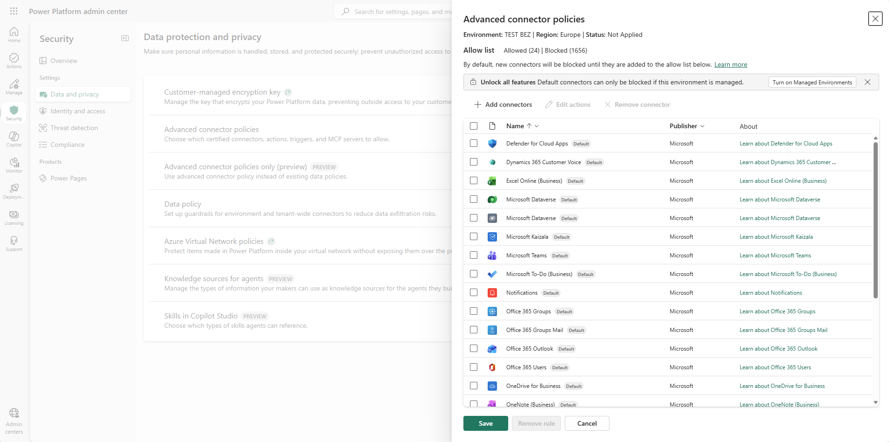
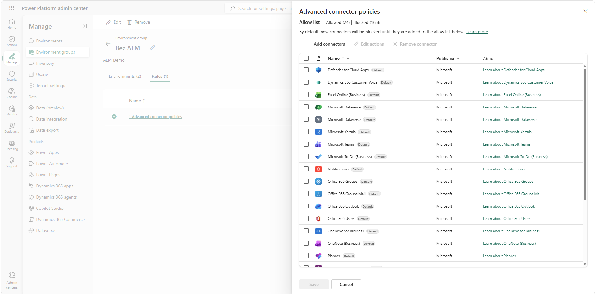
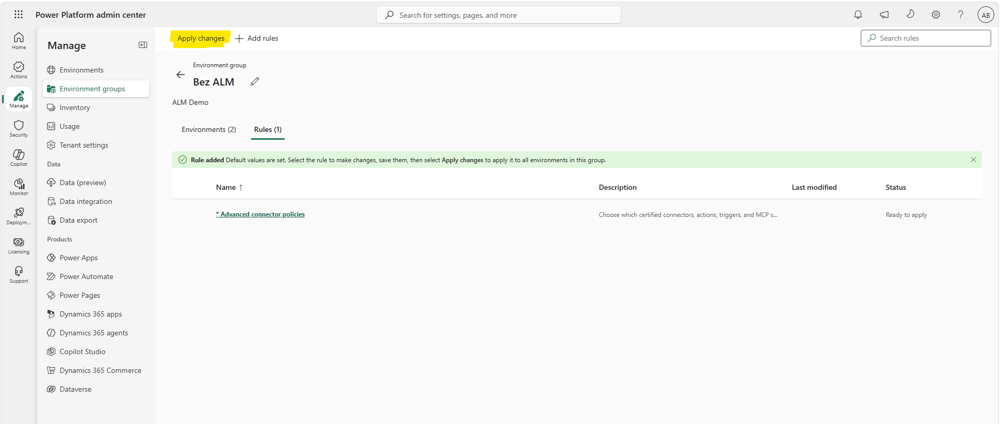
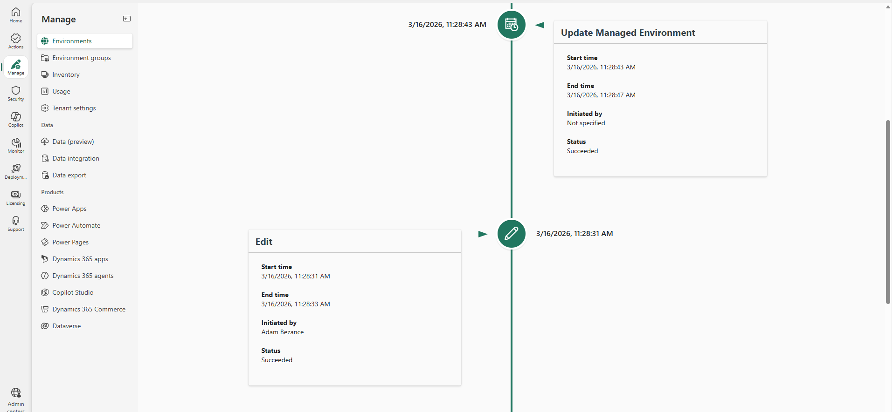
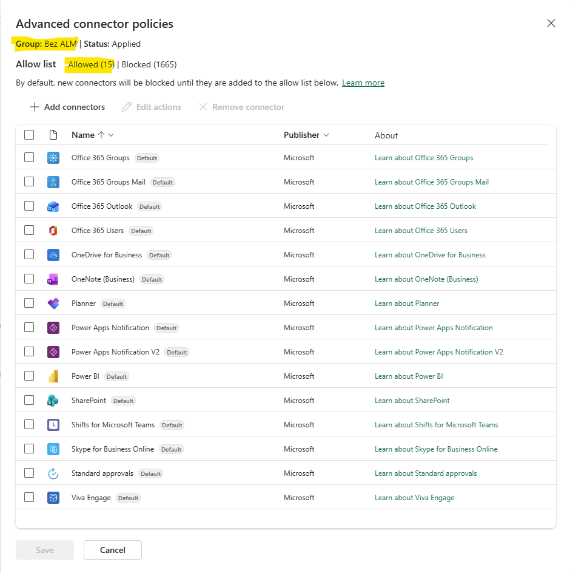
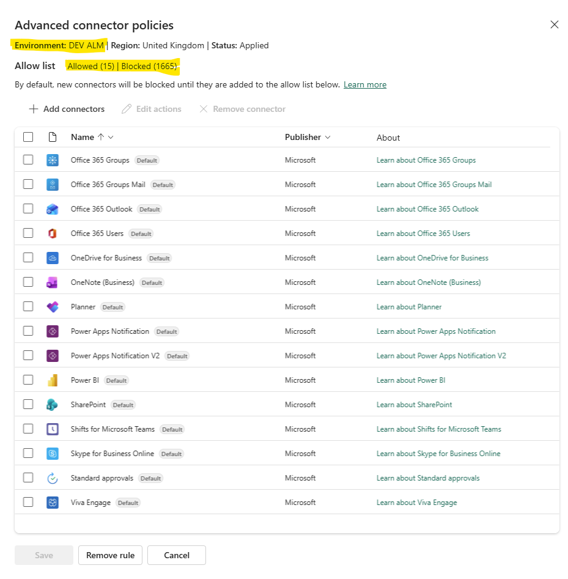

Two ways in
There are two places to configure an advanced connector policy in the Power Platform admin centre, and which one you use depends on scope.
Single environment: Security > Data and privacy > Advanced connector policies. Select the environment, click Manage Connectors and define the policy, Save. Done. No environment groups, and notably, no Managed Environments requirement. This route exists specifically so that anyone on classic DLP can migrate without extra licensing cost. (Note: without Managed Environments, the nonblockable connectors remain nonblockable.)

Environment group: Manage > Environment groups > select your group > Rules tab > Advanced connector policies. Define the policy, Save, then click Apply changes from the command bar. This route does require Managed Environments.

The one-per-environment rule applies regardless of route. Each environment has exactly one effective ACP, either set directly or inherited from its group. There is no policy stacking, no overlapping scopes, no mental arithmetic to work out the effective result. This alone fixes the single most confusing thing about classic DLP.
What you see when you open the panel
A fresh policy starts with the nonblockable connectors preloaded as allowed. Everything else in the certified catalogue is blocked. From there:
- Add connectors opens the picker across all certified connectors. Select what your makers need and add them to the allowlist.
- Remove connector takes anything off the list, which blocks it. On Managed Environments this includes connectors that classic DLP treated as nonblockable.
- Edit actions provides access to allow/block actions and triggers within each connector.
- A Status property at the top of the panel shows Applied or Not applied, so you can confirm enforcement state at a glance.
- A Remove rule button disables ACP entirely for that scope.
What Apply changes actually does
For environment groups, saving the rule isn't enough. You need to hit Apply changes from the command bar.

During publishing, the platform runs an environment lifecycle operation against every environment in the group, which cascades the policy to both the design-time and runtime infrastructure. You'll see it in environment history as "Update Managed Environment", which is useful for auditing when a policy change landed.

One thing to be aware of here is that policy propagation is not instant. I've found that ACP changes can take several hours to take effect. Allow for sync time in your change process and verify enforcement in the maker experience before declaring a change complete.
Groups, inheritance, and what happens on the way out
If you remove an environment from an environment group, it doesn't revert to an unpoliced state. It retains the last known ACP configuration from the group, which you can then adjust individually. That's a sensible failsafe, since leaving a group never silently drops your governance.


In the first post I covered what ACP changes about connector governance. Having now built and published policies with it, I'd add: it's also the operational model DLP should always have been. One policy per environment, a visible status, an audit trail, and a failsafe on the way out of a group.